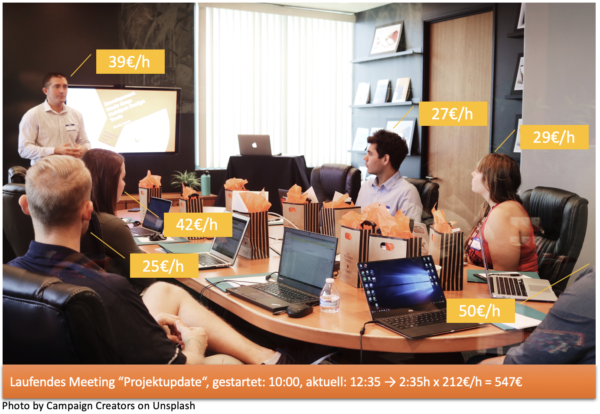

Absichtsvolle Begegnungen statt Meetings
Meetings sind die Pest, oder? Jedenfalls kenne ich niemanden, der es begrüßen würde, zu einem Meeting eingeladen zu werden. „Wir müssen uns unbedingt mal wieder treffen!“ mag vielleicht im Freundeskreis nach Jahren der Kontaktlosigkeit ein freudvolles Nicken auslösen, nicht jedoch im Business-Kontext.
Früher waren es Sitzungen und Besprechungen. Das klang auch schon nicht so gut, allemal die Sitzung nicht. Ich assoziiere damit zigarettenrauchgeschwängerte Räume mit müden Gesichtern. Dann wurden beide deutschen Worte ersetzt durch das Englische Meeting. Damit sollte vielleicht der Form wieder ein wenig Leben eingehaucht werden – doch der Schuss ist nach hinten losgegangen, würde ich sagen. Ein Tag voller Meetings verspricht nicht mehr Produktivität und Arbeitsfreude als ein Tag voller Sitzungen und Besprechungen. Jetzt wird zwar nicht mehr geraucht in fensterlosen Räumen, dafür aber unterm Tisch am Handy gespielt. Und das ist schlimmer, glaube ich.
Was aber lässt Sie und mich beim Gedanken an Meetings mit den Augen rollen? Das eine wie das andere Wort ist ja nur ein Etikett für eine Form. Was ist für die charakteristisch?
Aufwand & Nutzen normaler Meetings
Irgendwie stimmen Aufwand und Nutzen nicht. Für die aufgewandte Zeit fließt nicht genug zurück. Es ist nicht genug Information, um die eigenen Aufgaben besser voranzubringen, es ist nicht genug Anerkennung für die eigenen Leistungen und es ist auch nicht genug Dankbarkeit für gegebenen Input. Würde das eine oder andere recht verlässlich dabei herumkommen, wenn Sie in einem Meeting anwesend sind… dann wäre es be-lohnend, hinzugehen. So, wie es aber ist, erscheinen Meetings regelmäßig als Zeitverschwendung. Nicht an einem Meeting teilzunehmen, ist be-lohnender; wenigstens kann man dann Aufmerksamkeit darauf verwenden, eine Aufgabe voranzubringen.
Und warum ist die Diskrepanz zwischen Aufwand und Nutzen so groß?
Mir scheint das Gemeinsame von Meetings, also verabredeten unproduktiven Begegnungen, die fehlende Augenhöhe. Zu einem Meeting verabreden sich nicht die, die von einander etwas wollen. Vielmehr werden Menschen verabredet. Einer will von anderen etwas, aber die anderen nicht von dem einen.
Das Meeting erzeugt genervte Seufzer, weil es eine grundsätzlich hierarchische Veranstaltung ist. Einer spricht, alles schläft – und das sogar reihum. Monologe reihen sich aneinander. Der simple Grund: niemand außer einem, dem Einladenden, hatte die Absicht, mit den anderen zusammenzukommen. Doch der Einladende hat genügend Macht, um die anderen trotzdem in einen Raum zu bitten. Nein, falsch, es handelt sich nicht um Einladungen und gebeten wird auch nicht. In beidem würde die Option stecken, die Einladung auszuschlagen bzw. die Bitte abzulehnen. Doch genau das geht üblicherweise eben nicht.
Ein Praxisbeispiel
Selbst in einem Unternehmen, mit dem ich gearbeitet habe, in dem Meetings offiziell alle optional waren – man konnte teilnehmen oder auch nicht, ganz ohne Begründung -, haben 95% der nun wirklich Eingeladenen die Einladungen angenommen. Dazu habe ich zwei Begründungen gefunden: 1.) Der Glaube daran, dass die Optionalität wirklich ernst gemeint war, war schwach. Man war sich unsicher, ob Abwesenheit tatsächlich keine negativen Auswirkungen haben würde. Die Konditionierung durch die Machthierarchie vorher erlebter Meetings war zu stark für die ernst gemeinte Optionalität. 2.) Die Unsicherheit war groß, ob man mit einer Entscheidung gegen eine Teilnahme wirklich die beste Entscheidung treffen würde. Denn wer sich gegen ein Meeting entscheidet, muss sich für die Arbeit an einer anderen Aufgabe entscheiden. Welche hat erkennbar jedoch ein genügendes Gewicht? Die Unklarheit diesbezüglich war groß. Es fehlten also Prioritäten.
Das Meeting als einseitig anberaumte Versammlung sitzt also tief. Es führt zu Reflexen, die aufs Ganze gesehen kontraproduktiv sind.
Und zu welchem Zweck? Um ehrlich zu sein… der ist mir eigentlich nicht ganz klar. So sage ich es jedenfalls einfach mal provokativ. Der Zweck scheint irgendeine Form von Austausch. Meistens. Manchmal geht es auch um Entscheidungen. Der Einladende will sich den Eingeladenen mitteilen. Beziehungsweise er will, dass die sich ihm mitteilen. Oder er möchte, dass sie sich einander mitteilen. Oder alles zusammen.
Was kostet so ein Meeting?
Austausch ist schon wichtig, keine Frage. Aber ist ein Meeting die beste Form für einen Austausch? Das Meeting zwingt viele Personen zur selben Zeit an denselben Ort. Zusätzlich müssen üblicherweise alle auch noch die ganze angesetzte Zeit anwesend sein, selbst wenn sie nicht den Eindruck haben, dass es während dieser ganzen Zeit für sie interessant sei.
In Meetings steckt ein ungeheurer personeller Aufwand. Terminkalender müssen aufwändig koordiniert werden. Eine Tool-Industrie hat sich darum herum entwickelt. Damit lässt sich Geld verdienen.
Und dann kostet das Ganze auch noch eine Menge Geld. Von der Notwendigkeit, Meeting-Räume mit all ihrem Equipment vorzuhalten, will ich gar nicht reden. Da kommen sicher Anschaffungskosten von mehreren Hundert oder Tausend Euro zusammen und die Miete für vielleicht 25qm Meeting-Raum liegt bestimmt bei 350+€ pro Monat.
Aber das ist nichts gegen die Zeit! Ein Meeting mit 10 Teilnehmern kostet ein Unternehmen sicher 300€ pro Stunde, eher mehr je nach anwesenden Rollen. Im Zeitalter von Augmented Realität stelle ich mir vor, dass es eine App gibt, durch die man auf ein Meeting schaut und genau das sieht:

Das könnte doch eine gewisse beschleunigende Wirkung haben, oder? Aber die Intransparenz bei den Gehältern spricht natürlich dagegen. Und der Betriebsrat bestimmt auch.
Und so bleiben die Verhältnisse wie sie sind: Meetings finden weiterhin statt, weil die Kosten nicht klar sind und es doch auch schön ist, die Macht zu haben, andere um sich zu versammeln. Wie sollte denn auch die Alternative aussehen?
Sich begegnen
Menschen zum synchronen Austausch von Informationen zusammen zu bringen, gar körperlich, scheint mir die teuerste Form der Kommunikation. Deshalb schlage ich vor, Verabredungen auf ein Minimum zu reduzieren. Sich zu begegnen sollte etwas Besonderes sein und für den Ausnahmefall vorbehalten sein.
Wenn schon verabreden, dann mit voller Konzentration. Jeder, der „nur so“ noch dabei abhängt, verschleudert bares Geld und lässt andere Aufgaben liegen. Das ist das Gegenteil von ökonomischem und produktivem Verhalten.
Damit Begegnungen für alle Beteiligten ein Maximum bringen für die eingesetzte Zeit, ist die erste Voraussetzung, dass sie auf Augenhöhe stattfinden. Sie werden also von allen Teilnahmekandidaten ausgehandelt; niemandem wird einfach so eine Einladung zugestellt, gar automatisch in den geteilten Kalender eingetragen.
Begegnungen sind nur dann als solche nennenswert, wenn sich alle darauf freuen. Die erste Belohnung muss darin bestehen, überhaupt daran teilzunehmen.
Es geht darum, voll und ganz persönlich anwesend zu sein. Jeder und jede sollte sich davon einen Gewinn versprechen. Die Wertschätzung der Anwesenheit der anderen ist die Grundlage für lohnende Begegnungen. Es soll Vorfreude auf spannende Gespräche und wertvollen Input herrschen.
Die Alternative zu Meetings beginnt also mit einer anderen Beziehung zwischen den Teilnehmenden. Augenhöhe und spürbare Bedeutung sind zentral. Dann sind auch Kleidung und Ort und Zeit der Begegnung nicht mehr so wichtig. Wenn die andere Person wichtig ist, dann ist es ihr Kostüm nicht mehr, dann muss es auch nicht der herausgeputzte Meetingraum sein.
Einfachere Umgebungen – von der Kaffeeküche bis zum Spaziergang im Park – reichen. Oder warum sich nicht online begegnen? Gemeinsame Anwesenheit in einem Raum ist überbewertet. Der Wunsch nach Co-Location wurzelt ja zu einem guten Teil in Schwammigkeit und Machtdenken. Mit Effizienz und Effektivität haben Meetings nichts zu tun, weil man sich körperlich versammelt.
Mit Absicht
Zu einer Begegnung mit Vorfreude gehört natürlich auch Klarheit, was die Absicht angeht. Anberaumte Begegnungen müssen einer fokussierte Absicht dienen, für die eine minimale Zahl an Teilnehmenden sich zusammenfindet. Jeder, der kommt, spielt die ganze Zeit eine wichtige Rolle.
Aus klarer Absicht folgt dann auch kurze Dauer. Absichtsvolle Begegnungen binden die Anwesenden konzentriert nur die kürzestmögliche Zeit. Die Meeting-Agenda mit 15 TOPs ist tot! Es lebe die absichtsvolle Begegnung zu 1 Zweck.
Wer eine Begegnung als nötig erachtet, hat damit die Verantwortung, anderen den zu treibenden Aufwand schmackhaft zu machen. Damit wird abgesehen vom persönlichen Nutzen. Die Frage muss immer wieder lauten: Was springt dabei für die anderen heraus? Alle Teilnehmenden sollen das Gefühl haben, etwas durch die Begegnung zu gewinnen – die eine vielleicht Information, der andere vielleicht Anerkennung.
Wie die Absicht dann am besten verfolgt wird, steht natürlich auch zur Diskussion. Online, offline, on-site, off-site… alles ist möglich und wird der Sache wie den Präferenzen aller Teilnahmekandidaten angepasst.
Zusammenfassung
Alle treffen sich mit voller Absicht. Immer.
Das ist mein Gegenentwurf zur Meeting-Pest.
Kürzer, fokussierter, kleiner, multimedialer: so sollen Verabredungen sein. Damit würde der Demotivation und Verschwendung vorgebeugt.
Zuerst wollte ich auch schreiben, seltener. Aber bei all den anderen guten Eigenschaften mag sogar das Gegenteil eintreten, ohne die in Verabredungen verbrachte Zeit absolut zu erhöhen. Punktuelle absichtsvolle Begegnungen können auch häufiger stattfinden, wenn sich zeigt, dass dadurch die Produktivität mehr steigt als durch die Alternativen.
Denn, wie gesagt, Begegnungen, so schön sie sein mögen im Privaten, müssen im Geschäft ihre Berechtigung beweisen. Informationen lassen sich auch auf anderem Wege austauschen – und oft deutlich ökonomischer. Digitale Transparenz ist das Zauberwort.
Und so hängt alles zusammen. Wenn ich gebeten werde, bei der Digitalisierung zu unterstützen, dann bedeutet das für mich nicht, z.B. ein digitales Werkzeug zur besseren Protokollierung von Meetings vorzuschlagen. Nein, ich sehe meine Aufgabe darin, den Grund für die Protokollierung zu hinterfragen. Es braucht womöglich kein neues Protokoll-Tool, sondern die Abschaffung von Meetings.
Absichtsvolle Begegnungen: die sind für mich ein wichtiger analoger Aspekt bei allen Anstrengungen in Sachen Digitalisierung.
Weitere Artikel

Regeln für KI im Office
ChatGPT & Co haben sich schnell in die Herzen und Alltag von vielen Menschen im Berufs- und Privatleben gespielt. Diese neuen Werkzeuge eröffnen uns viele Chancen, nicht nur effizienter zu werden, sondern auch kreativer. Aber …

KI als Copilot für die Assistenz
KI in Form von ChatGPT & Co sind hervorragende neue Werkzeuge im Office-Alltag, um produktiver und ja, auch kreativer, zu werden. Neugier statt Angst ist angezeigt im Umgang mit diesen Werkzeugen, die wie andere Werkzeuge auch …